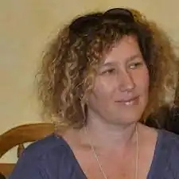
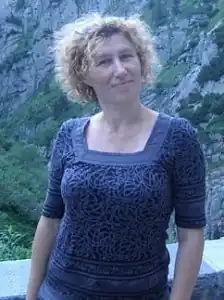

Відута Любов Йосифівна — відома українська письменниця. Народилася 9 березня 1970 р. у Львові. Змалку з мамою спілкувалася віршами. Це була своєрідна гра, цікава забава для Люби "…ми задавали одна одній римовані питання, шукали римовані відповіді і я сприймала це як дитячу гру". "Перший віршик з'явився у віці 3,5-4,5 років. Найбільш "довершений", бо мав певний зміст, початок і кінець. Потім було багато інших, але цей запам'ятався. Ось, лише кілька рядків: "… віночок зайчик сплів, зайчисі на галявинці на голову надів…". Так малювала дитяча уява…"".
Освіту здобувала у Львівському технікумі промислової автоматики та в Національному університеті "Львівська політехніка".
Але Любі найбільше хотілося писати: "Рідні бачили, наскільки багато часу цьому присвячувалося, почали підштовхувати видавати написане. Перший псевдонім був "ВОДА". У ньому перша і остання літери власного прізвища, дата народження (березень) — знак риб, символічно все закладено. Така спроба підпису творів радше була випробуванням, перевіркою письменницького хисту, талану. Тому дуже ретельно підбирала і спостерігала як це буде. Певний час підписувалась цим псевдо". Сьогодні у доробку письменниці 19 книг. Серед перших — "Працьовита бджілка" (2008). Друга — "Ким я буду? Ким я стану?" (2009). У 2010 році побачила світ збірка дитячих віршів, загадок, скоромовок "Усміхнулось cонечко" (2012 року потрапила в довгий список Літературної премії "Великий Їжак"). Серед знакових — книжка-білінгв "У царстві Лева" (2015), двомовне видання (ілюстрації Христини Лукащук). Ця книга стала однією з перших "ластівок" щойно створеного чернівецького видавництва "Чорні вівці". У 2018 році побачила світ "Абетка" від видавництва "Пегас". Книга "Ловці думок" (2018) отримали відзнаку Міжнародного літературного конкурсу "Коронація слова". Серед останніх найновіших книг — "Насипала зима сніжинок на долоньки" (лютий, 2020), яка вийшла шрифтом Брайля поряд зі звичайним текстом. Джерело: https://lodb.org.ua/pl/use-pro-lviv/lvivski-pysmennyky-dityam/lyubov-viduta